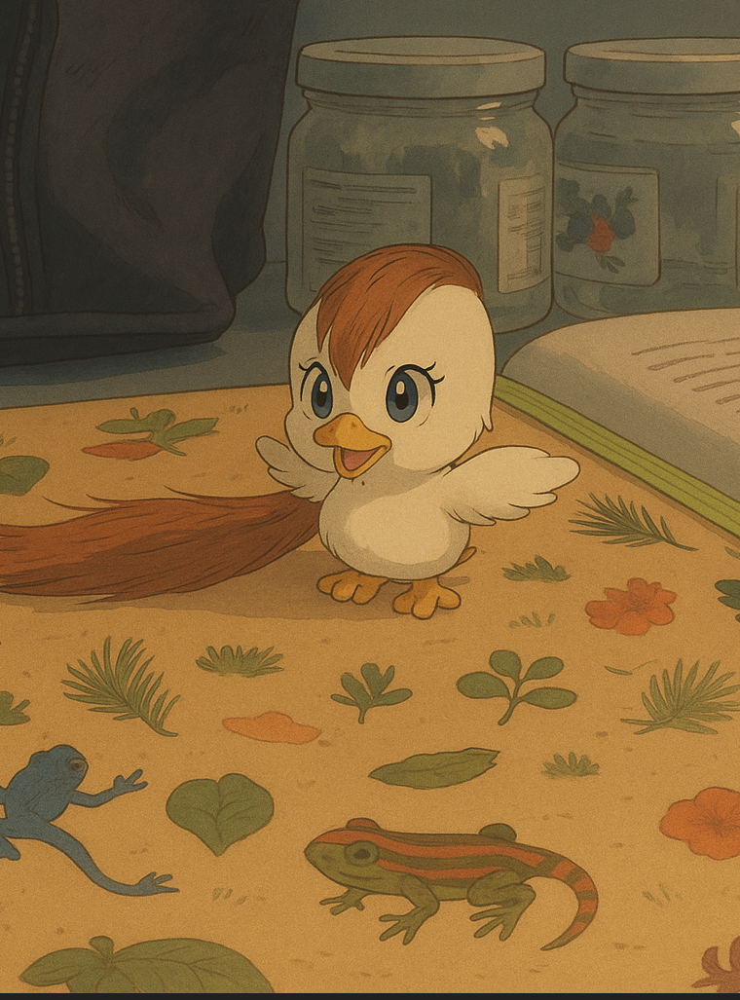
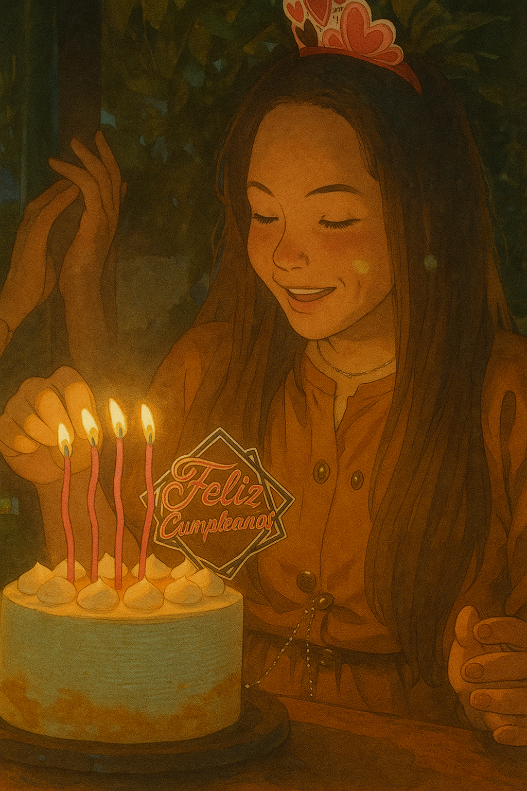
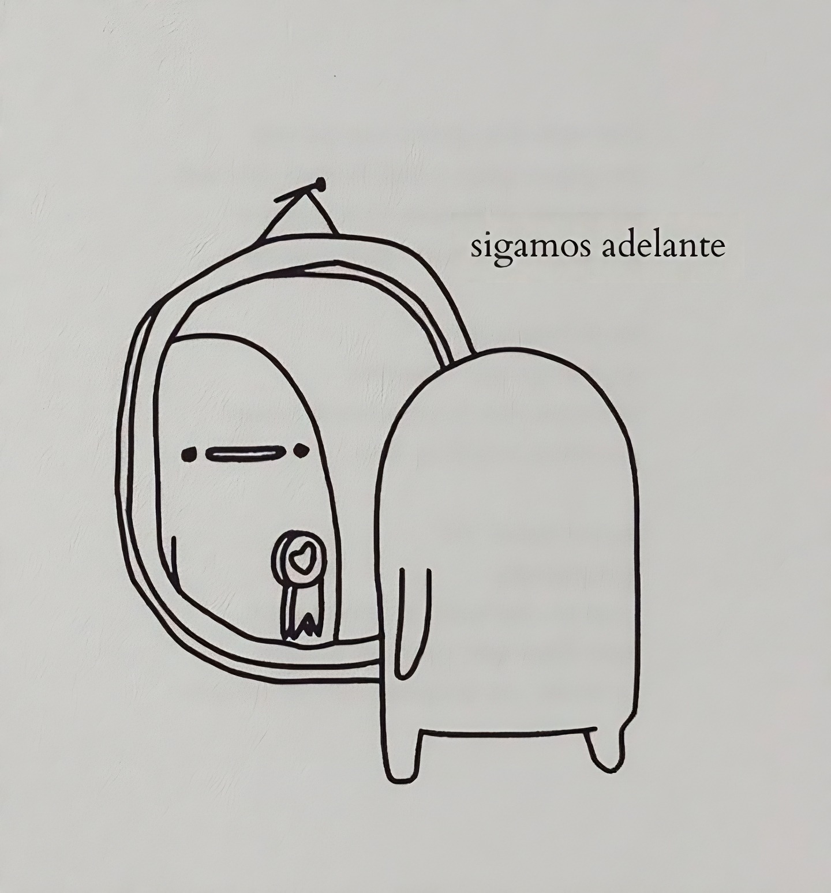

21/03/2025
Giovanna Andrea Gómez Bernal
Este espacio fue preparado con mucho cariño y guarda algo verdaderamente especial, único y destinado solo para ti.
🌙
21/03/2025

A partir de hoy, trataré de seguir adelante, ahora que ya no me encontraré con tu mirada. Seguramente, se vendrá una gran cantidad de días que dejaré de reír por no tenerte en este espacio de manera tangible. Todo fue muy diferente. Los abrazos, las sonrisas y las palabras únicas.... Nuevamente te lo digo, has sido de las mejores "cosas" improvisadas que han llegado en mi vida, y, haya sido real o no, te lo agradezco, porque en todo este lapso (de tiempo) fui muy feliz.
Perdona todo lo malo, soy humano y también me equivoco.
No me quiero alargar mucho. Pero la verdad, solo espero que lleguen pronto más días felices a mi vida (y espero no me malinterpretes)…
De mi parte, deseo que la vida ponga en tu camino todo lo que realmente te haga feliz, que tus pasos te guíen a donde quieras llegar. Que cuando tropieces, tus alas se abran y alces nuevamente el vuelo. Que tus brazos sirvan para consolar a quienes quieres de verdad y sean un refugio de consuelo donde puedan descansar y sentirse a salvo. Que tus lágrimas se transformen en sonrisas y te des cuenta de que lo malo no dura siempre y que la vida, a pesar de todo es bella. Así, siempre tendrás razones para seguir adelante y no rendirte jamás. Recuerda que hasta la luna pasa por fases para volver a estar llena...
Hoy quiero decirte "Gracias"... Gracias por haber aparecido cuando lo hiciste. Gracias por verme y disfrutar en realidad de como soy. Gracias por darme tu atención y todo tu apoyo. Gracias por tu tiempo. ¡Gracias por absolutamente todo! ... porque aunque no fue mucho el tiempo, para mí, fue un para siempre.
De lo malo que tal vez pienses que en algún momento pudiste "aportar", no fue malo realmente. Sin rencores, porque un día fuiste mi persona favorita...
¡Todos rompimos nuestras propias reglas por alguien y no todas las historias necesitan un cierre perfecto; algunas solo deben ser vividas!
Felicidades por llegar hasta aquí, felicidades por este gran logro, felicidades porque lo que se viene va a ser realmente bueno para ti y mereces celebrarlo… ¡Sabes más que nadie que te lo mereces!
Y pues bueno, como tanto te gusta la "Luna", recuerda...

Este es un pensamiento que espero toque suavemente tu corazón y guarde con cariño todo lo bueno que pude sembrar en él.
¡Eres la justa medida de todo!
----- 22/03/2025 -----

----- 23/03/2025 -----
10:44 de la noche...
Fisicamente no estamos juntos, pero si pudieras tomar mi corazón y observarlo, verías que estás aquí conmigo…
----- 24/03/2025 -----
11:12 de la mañana...
Guardaré como un tesoro el recuerdo de la primera vez que hablé contigo...
ese instante donde sin saberlo,
mi corazón reconoció a alguien hermoso que había llegado para quedarse por mucho tiempo...
3:04 de la tarde...
Trato de avanzar cargando el silencio de tus respuestas que nunca llegaron...
----- 25/03/2025 -----
07:07 de la noche...
Primer día sin ti en ese rinconcito donde te conocí...
Ese lugar donde siempre te buscaba y ahí estabas, donde en mis días oscuros brillabas con tu luz. Hoy no pude verte, no me encontré con tu mirada, no sentí tu energía ni escuché tu risa… No estuviste en ese pedazo de cielo, y te extrañé… Sí, te extrañé, tanto que mi día se sintió incompleto, como si le faltara un rayito de sol. Ahora entiendo por qué hoy el día se tornó gris…
08:35 de la noche...
Y ella respondió...
"Ay yo también te extrañé tantoooo. Te dije que el cielito estaba triste porque sabía que no íbamos a vernos como lo hemos hecho los últimos meses y se sintió horribleeee y peor pensar que es el primero de los próximos días.😖
Peeero, aún y con lo difícil que sea adaptarnos a esta nueva forma de hacer parte de la vida del otro, haberte visto al final del día me alegro la vida, hoy enserio viví en función de que este momento llegara. Porque eres lo que me llena los días, eres mi risita diaria. Me haces falta otra vez, pero gracias por venir y querer darme un ratico de tu tiempo para llenarme de alegría y dejarme una sensación bonita con tu visita."
----- 26/03/2025 -----
05:15 de la tarde...
Mi mejor descanso de la semana... Fue uno de esos sueños profundos en los que todo se desvanece: el mundo se detiene, los problemas se disuelven y, por un instante, dejas de ser, dejas de estar, y solo quedas en un vacío sereno donde nada pesa ni existe... Post: Me despertó el dolor en el brazo. 🙄
----- 27/03/2025 -----
09:31 de la noche...
Porfa no me la dediques... 🥺
Morat, Camilo - Me Toca A Mí (Video Oficial)
----- 28/03/2025 -----
10:55 de la noche...
"Estábamos junticos y ya eso lo hacía ser de los dos..."❤️
----- 29/03/2025 -----
10:55 de la noche...🥺🥺🥺

----- 05/05/2025 -----
09:54 de la noche...
¿El grado para cuándo? 🙄🙄🙄
----- 06/05/2025 -----
06:44 de la tarde...
"Cederé si el plan divino es quedarte conmigo..."
----- 01/06/2025 -----
10:43 de la mañana...
"...me aferro a que no fue un final sino un alto en el cuento.." 🥺🥺🥺
----- 02/06/2025 -----
02:35 de la tarde...
Morat - Desastre Natural
"...cuando yo apenas te estaba conociendo,
Y ya sabiendo lo que te iba a querer..."
----- 05/06/2025 -----
02:26 de la tarde...

🎶""...hoy me has hecho falta para bien y para mal...""🎶
----- 19/06/2025 -----
08:35 de la mañana...
🙏🏽🙏🏽🙏🏽 ¡Perdoncito por la hora...! 🙏🏽🙏🏽🙏🏽

Algunas cosas para recordar a tus 24 años:
• Ama, por encima de todo, incluso por encima de ti misma.
• Perdonarte siempre será el acto más puro de amor propio.
• A veces, huir no está mal... Es solo otra forma de sanar.
• Tener el corazón roto permite que entre nuevamente la luz en él.
• Lo que tanto buscas te encontrará cuando menos lo esperes.
• Siempre hay y habrá tiempo, solo espera y ten paciencia...
• Tu niña interior sigue ahí, jugando y soñando, no la reprimas...
• ... Y aunque a veces parece que no queda nada, la esperanza siempre está ahí, esperando.
¡Que la luz del sol te llene de fuerza, que la alegría te acompañe y que la magia transforme este día en algo maravilloso!
¡Feliz cumpleaños Gómez Bernal!
----- 23/07/2025 -----
09:40 de la mañana...

"Lo que significa crecer..."
"Ayer" estabas en primer semestre, aprendiendo a encontrar los salones, (supongo que) con miedo de hablar en clase… Y hoy "te pones" una toga para decirle adiós a la universidad.
Hoy tienes 24 años y es posible que te hayan dicho que el mundo te espera.
Es posible que pienses que no estás lista, es normal, nadie sabe literal nada al salir de la Universidad. Así que no tengas miedo de sentirlo.
Tómate un momento para respirar y para entender (si lo sientes necesario) lo que significa cerrar esta etapa. Esta etapa que es primordial y que te da un paso para lograr y conseguir grandes cosas.
Aunque pueda que te duela… Crecer también es parte del camino.
De mi parte y por el momento, solo te puedo decir:
¡Ten ganas...! Ganas de crecer. Ganas de aprender. Ganas de vivir.
¡Te lo mereces todo!
¡Felicidades por tus grados, Gómez Bernal!
🌙